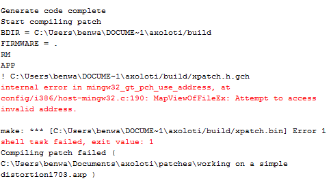

Hi there, so yeah basically last night was doing some work with the axo and everything was good. Then i got back home from uni and went to boot up the axo again and i get this odd error. Nothing has changed in terms of the patch as i just loaded my save from earlier in the day. i have also tried just loading a single factory object into the patcher and still the axo wont compile and brings up same error 
.
Any ideas as to what this means/how can i fix ?
some more info, ive found out that these patches do compile & run on my desktop machine, so must be something to do with my laptop. I went to re-install, hit the "repair" button as i'm on the current release and that didn't change anything.
Much appreciated